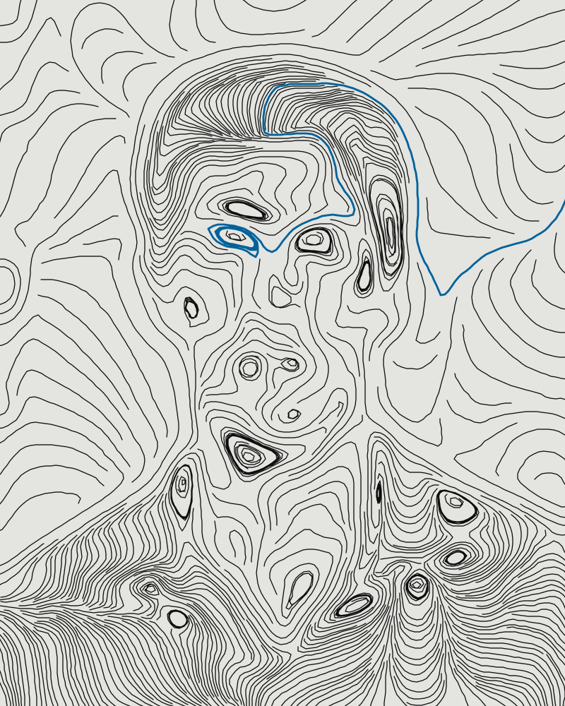

Biosignals, Diagnostics, and the Models That Read Them
Abstract—This site collects the writing, interactive explainers and design work of a biomedical engineer. The research concerns biosignal acquisition and diagnostics, with recent work applying deep learning to mass spectrometry and biomedical imaging. The articles range from research proposals and reviews to short practical notes. One of them, an atlas of machine-learning notation, runs in the browser.
Index Terms—Biosignals, bioimpedance, endothelial function, multimodal deep learning, mass spectrometry, explainable AI, UX design.
I. Introduction
I am a biomedical engineer (First Class Honours, University of Moratuwa) and a PhD candidate at the University of Melbourne. My undergraduate thesis built a reconfigurable device that records blood pressure, temperature, bioimpedance and PPG from a patient's arm, validated in a clinical study.
That work became Endo-MASS, which received the Best Paper Award at IEEE ICIIS 2023. Since then I have worked on compound identification from mass spectrometry data and presented at ASMS 2024.
II. Recent Articles

| Title | Kind | Year |
|---|---|---|
| ML Notation Atlas | Interactive | 2026 |
| Estimating Osteoarthritis Progression With Multimodal Deep Learning | Proposal | 2024 |
| Novel Computational Models for Semantic Decoding | Review | 2023 |
| Explainable AI for Understanding Cell-Cell Interactions | Proposal | 2023 |
| Some useful Linux commands | Note | 2022 |
| Setting up a web server in an EC2 | Note | 2022 |
III. Design Work
Outside research, I design: UX and visual work spanning web apps, posters and pitch decks. A selection is shown in Fig. 2; the rest is on Behance.

References
- P. Ekanayake, “Estimating osteoarthritis progression with multimodal deep learning,” pulasthi.dev, Dec. 2024.
- P. Ekanayake, “Novel computational models for semantic decoding,” pulasthi.dev, Oct. 2023.
- P. Ekanayake, “Explainable AI for understanding cell-cell interactions,” pulasthi.dev, May 2023.
- “Endo-MASS: Multi-signal acquisition system and software for non-invasive assessment of endothelial function,” in Proc. IEEE ICIIS, 2023. Best Paper Award.

Pulasthi Ekanayake received the B.Sc. Eng. (Hons.) degree in biomedical engineering from the University of Moratuwa, Sri Lanka. He has worked as a machine learning engineer building AI tools for scientists, and as a designer of web apps, posters and pitch decks. Full profile.